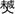

万琬祖承任房派下世录 |
三十一世 |
万琬四子 |
承任 |
字衍士，生康熙戊辰年正月二十日子时，殁乾隆辛丑二月十六日未时，葬梅坑何树下迁葬中洞仔里侧面虎形午山子向。配扶氏救娘，生康熙庚午九月二十八日已时，殁乾隆乙卯二月十六日酉时，葬土公岭盘龙形中穴癸丁兼丑未，生子二：世遇、世逮；生女二：招秀适张槐玉、石秀适扶能亮。 |
三十二世 |
承任长子 |
世遇 |
字合三，生康熙丁酉十一月初四日卯时，殁乾隆辛亥九月初六日酉时，葬土公岭盘形田中心中穴癸丁兼丑未，先年世遇预卜寿藏在中洞仔里侧面虎形有碑文存。配扶魁仙女良娘，生康熙丁酉十一月十八日卯时，殁乾隆辛未二月初四日申时，葬中洞仔里矮岭脑月形乾巽兼辰戍有碑文存，生子四：大斐、大珍、大绣、大纬。 |
三十三世 |
世遇长子 |
大斐 |
字锦成，生乾隆丙辰年八月二十一日已时，殁嘉庆辛未三月二十六日午时葬土公山盘龙形癸山丁向兼丑未。配扶氏外娘，生乾隆乙丑七月十七日时，殁嘉庆庚辰十一月二十三日卯时，葬土公岭确屋脑戍山辰向兼乾巽。生子三：兴拔、兴绪、兴琏；生女一适扶举庭。 |
三十四世 |
大斐长子 |
兴拔 |
字在阳，生乾隆丁亥十一月二十七日辰时，殁嘉庆庚辰十月初三日丑时，葬土公朱癸垅艮坤兼丑未。配扶氏初娘生乾隆戊子五月二十六日，殁道光癸卯十一月三十日已时，葬土公岭确屋脑乾山巽向兼戍辰。生子三：启萼、启慧、启全；生女一：桂兰适黄直刚。 |
大斐次子 |
兴绪 |
字普皇，葬土公岭左边埂上乾山巽向兼戍辰，配郭氏，葬桂阳彰溪吊狗垅坐东向西。生子三：启英、启连、启癸；生女一：清香适胡。 |
大斐三子 |
兴琏 |
字蕴奇，葬土公山夫子弹琴形寅山申向兼坤辰。 |
三十五世 |
兴拔长子 |
启萼 |
字馥儒，生乾隆乙卯七月二十三日卯时，殁光绪丁丑十二月十七日酉时，葬一都中洞子里侧面虎形庚山甲向兼酉卯。配苏氏茶娘，生嘉庆丙寅九月初九日，殁光绪己亥三月十三日酉时，葬土公岭确屋脑乾巽兼亥已。生子五：武织、武绳、武纯、武红、武综。 |
兴拔次子 |
启慧 |
字书桥，生殁失考，葬梅杭口艮坤兼申寅。 |
兴拔三子 |
启全 |
字玉文，生殁失考，葬梅坑口申山寅向。配扶氏惠娘，生殁失考，葬梅坑塘流下辛乙兼戍辰。 |
三十六世 |
启萼长子 |
武织 |
生道光丁酉四月十二日已时，殁道光庚子四月初五日辰时，葬老虎垅凹壬丙兼子午。 |
启萼次子 |
武绳 |
字锡章，生道光己亥十二月十七日戍时，殁光绪癸未九月十五日申时，葬一都中洞仔里矮岭脑月形丑山未向。配黄氏秀娘，生道光戊戍正月十七日，殁光绪癸未十月十二日已时，葬土公岭松树垅亥山已向。生子三：昌连、昌禄、昌才；生女一：彩还适郭翠纯。 |
启萼三子 |
武纯 |
字锡光，生道光壬寅十月二十四日，殁光绪丙戍十一月十二日午时，葬土公岭盘龙形脚下路边亥山巳向。配扶氏出。生子一：昌明，接弟武综七子昌林一半为嗣；生女一：石才适黄启贤。 |
启萼四子 |
武红 |
字锡恩，生道光乙巳十二月初八日丑时，殁民国己未正月二十五日午时，葬一都上洞仔里外排龙形庚山甲向兼申寅分金，后改葬上洞仔里羡鸡冲美女照镜形辛山乙向午山子向丁未兼丁癸分金。配扶氏连娘，生咸丰丙辰七月，殁民国丁巳年又三月初七日辰时，殁葬一都上洞仔里外排龙形庚山甲向兼申寅分金，夫妇同墓有碑志。生子六：昌庆、昌达、昌元、昌玉、昌求，接满弟武综五子昌兴为后；生女一：冬逑适黄日新。 |
启萼五子 |
武综 |
字绍先，生咸丰亥年十一月十八日丑时，预卜寿藏长岭背学堂坳里横埂下面上戍山辰向有碑文存，殁庚午八月初六日未时辛山乙向辰戍分金。配黄氏冬兰，生咸丰庚申十月初八日酉时。生子七：昌连、昌华、昌隆、昌世、昌代过继一半与武绳为嗣、昌兴过继与武红为嗣、昌贵过继一半与武纯为嗣；生女三：春逑适扶、梅香适陈、清香适扶。 |
三十七世 |
武绳长子 |
昌运 |
生同治癸酉年九月初四日巳时，殁光绪丙戍年十月初四日巳时，葬长岭背仙鹅头白水盈坐北向南。 |
武绳次子 |
昌禄 |
生光绪乙亥年四月初三日，殁光绪戊寅年七月初八日，葬长岭背仙鹅头白水盈坐北向南。 |
武绳三子 |
昌才 |
生光绪戊寅年三月十八日，殁光绪庚辰年五月十二日，葬中洞仔里地前垅路面上坐东向西。 |
武纯长子 |
昌明 |
乳名春才，生光绪甲申十二月十八日，殁民国戊午九月十八日午时，殁葬上洞仔坳里田面上坐西向东，配扶氏出。 |
武纯次子 |
昌林 |
字富华，生光绪戊戍年八月二十一日辰时。配黄氏娥娘，生光绪癸卯年十月初二日未时。后生子一：承武纯祧。 |
武红长子 |
昌庆 |
字积心，生同治甲戍年六月十二日丑时，殁光绪丙午二月二十四日戍时，葬一都上洞子里可盈虎形巽山乾向。配黄氏清娘，生光绪戊寅年正月十六日寅时，接侄荣松为嗣。 |
武红次子 |
昌达 |
字积亨，生光绪丁丑年正月十七日酉时，殁民国癸丑八月初六日子时，葬一都上洞子里外排圳面龙形庚山甲向，继侄荣煌一半为嗣。生女二：长凤适黄、招凤适黄。 |
武红三子 |
昌元 |
生光绪己卯年五月初八日，殁光绪辛巳六月初四日，葬长岭背仙鹅头白水盈坐北向南。 |
武红四子 |
昌玉 |
生光绪甲申十一月十一日辰时，殁光绪辛卯十月二十三日，葬长岭背仙鹅头学堂坳里路下手埂坐西向东。 |
武红五子 |
昌球 |
生光绪戊子六月初七日戍时，殁葬失考。 |
武红六子 |
昌兴 |
字发华，生光绪丙申七月十三日子时，殁于公元一九五八年十二月，葬上屋组可盈田脑倒。配黄氏娥娘，生光绪戊戍三月初六日，殁于公元一九八三年十二月，葬上屋组可盈田脑倒。生子三：荣里、荣德、荣信；生女一：玉和适邓位升。 |
武综长子 |
昌连 |
字科蟾，生光绪丁丑五月初四日辰时，殁光绪己亥九月十六日，葬长岭背仙鹅头枧脑埂上丑山未向。配黄氏月娘出。继侄荣茂一半为嗣。 |
武综次子 |
昌华 |
生光绪己卯年十二月十四日戍时，殁光绪壬午正月二十三日，葬长岭背仙鹅头田面上坐北向南。 |
武综三子 |
昌隆 |
字代兴，生于光绪乙酉八月二十日酉时，殁葬失考。配李氏碧娘，生于光绪己丑年二月初二日，殁葬失考，合葬大垅里。生子一：荣煌过继一半与昌达为嗣；生女二：聪良、玉青。 |
武综四子 |
昌世 |
字冠常，生光绪戊子二月二十八日酉时。配黄氏杏娘，生光绪壬辰年九月二十一日子时。生子一：荣茂过继一半长兄昌连为嗣。接昌兴长子荣礼（荣里）为嗣；生女二：铨青、菊青。 |
武综五子 |
昌代 |
字吉封，生光绪庚寅七月初八日辰时，殁于公元一九五八年十一月，葬上填里。配黄氏兰娘，生光绪壬辰七月初九日亥时，殁于公元一九七六年六月十七日，葬对门任。生子三：荣宗、宝强殁、益明殁；生女三：青秀、柳桃、招弟。 |
武综六子 |
昌贵 |
生光绪戊戍八月二日，殁民国乙丑年八月三十日，葬上排乾山巽向。配黄氏娥娘，生失考，殁于公元一九五八年十月二十九日，葬马归朝未山丑向。生子：荣修（又名荣轩）。 |
三十八世 |
昌庆之子 |
荣松 |
生民国丁巳年三月初六日，殁葬失考。 |
昌达之子 |
荣煌 |
生民国壬子年三月初七日丑时，殁葬大垅里。 |
昌隆之子 |
荣煌 |
生民国壬子年三月初七日丑时，殁葬大垅里。 |
昌连之子 |
荣茂 |
生宣统庚戍年八月二十九日戍时，后生子一承昌连祧殁葬失考。 |
昌世长子 |
荣茂 |
生宣统庚戍年八月二十九日戍时，后生子一承昌连祧殁葬失考。 |
昌世次子 |
荣礼 |
字美仁，生公元一九二一年七月二十三日，殁于公元一九八五年九月十六日，葬春峰村上屋组上岭垅。原配偶黄美环，继配陈在美，生公元一九二五三月二十五日，殁于公元二00一年十月五日，葬春峰村上屋组上岭垅。生子一：盛盘；生女四：皇明适陈炳龙、秋容适郭冠雄、新莲适郭党雄、瑞容适郭冠忠。 |
昌代之子 |
荣宗 |
字光堂，生公元一九三三年八月二十日酉时，小学文化。配陈氏子媛，生公元一九三二年六月二十八日酉时。生子二：盛全、盛祥；生女：满莲适黄新才。 |
昌贵之子 |
荣修 |
又名荣修，生公元一九二三年八月二十二日，小学文化。殁于公元二OO四年十二月初一日子时，葬上排戊山辰向。配扶氏长群，生公元一九二一年七月四日巳时。生子二：湘铭、盛斌；生女四：秀眉适方瑞前、翠眉适李自良、淑娇适曹镇英、菊细适胡炫明。 |
三十九世 |
荣礼之子 |
盛盘 |
住大塘春峰上屋组，生公元一九四五年十二月十日午时。配偶黄美仁，生公元一九五三年九月十八日申时。生子一：力佳；生女二：春红适罗建，乐安。 |
荣轩长子 |
湘铭 |
住寨前乡山田垅村梨凹组，生于公元一九五五年三月二十八日，小学文化。配偶罗守琴，生于公元一九五七年一月二十九日申时，小学文化。生子一：海波；生女一：柏青。 |
荣轩次子 |
盛斌 |
住寨前乡山田垅村梨凹组，生公元一九六一年十二月二十八日未时。配偶黄晓芳，生公元一九六六年十二月十四日酉时，初中文化。生子一：一新；生女一：爱娟。 |
荣宗长子 |
盛全 |
住寨前乡山田垅村梨凹组，生公元一九五三年五月二十三日。配偶郭清红，生公元一九七0年九月二十日。生子：定文；生女一：长平。 |
荣宗次子 |
盛祥 |
住寨前乡山田垅村梨凹组，生公元一九六六年十二月十七日，小学文化，配偶胡彩琴，生公元一九六六年正月十一日，初中文化。生子：定松。 |
四十世 |
盛盘之子 |
力佳 |
生公元一九八一年十二月九日午时，住大塘春峰上屋组。 |
盛盘之女 |
乐安 |
住大塘乡春峰村上屋组，生公元一九九八年十二月十六日申时。 |
湘铭长子 |
海波 |
住寨前乡山田垅村梨凹组，生公元一九八一年十月九日，初中文化。 |
湘铭之子 |
柏青 |
住寨前乡山田垅村梨凹组，生公元一九八四年正月二日子时。 |
盛斌长子 |
一新 |
住寨前乡山田垅村梨凹组，生公元一九八七年三月二十三日午时，中专文化。 |
盛斌之女 |
爱娟 |
住寨前乡山田垅村梨凹组，生公元一九九八年二月九日未时。 |
盛全长子 |
定文 |
住寨前乡山田垅村梨凹组，生公元一九九九年七月二十日。 |
盛全之女 |
长平 |
住寨前乡山田垅村梨凹组，生公元一九九二年十月十一日。 |
盛祥之子 |
定松 |
生公元一九九一年七月八日。 |
三十八世 |
昌兴长子 |
荣里 |
字美仁，生民国辛酉年七月二十三日巳时。配陈氏，生民国丁巳正月十五日，生子一：盛盘；生女一：星明过继昌世为嗣。 |
昌兴次子 |
荣德 |
字静仁，住大塘春峰上屋组，生于公元一九三二年七月二十七日辰时，小学文化，配李氏爱和，生公元一九三0年三月二十九日戍时。生子四：盛秋、富成、远成、海成，生女三：端明适郭长文，端莲适黄玉山，满莲适李桂平。 |
昌兴三子 |
荣信 |
生公元一九三七年十月二十二日子时，殁于公元一九九一年十月，葬上屋可盈背横路下。配张氏元娴，生公元一九三九年三月二十二日。生子四：瑞成、建成、世成、满成；生女：早莲适郭正廷。 |
昌代之子 |
荣宗 |
字光堂，生民国癸酉八月二十日酉时，配陈氏，生民国壬申六月二十八日酉时。 |
三十九世 |
荣德长子 |
盛秋 |
住大塘春峰上屋组。生公元一九四八年八月十一日午时，小学文化。配偶陈艳群，生公元一九五0年八月十九日，生子：永高；生女三：采虹适黄金平、晓红适方小怀、彩弟廖桂胜。 |
荣德次子 |
富成 |
住大塘春峰上屋组。生公元一九六三年十二月，初中文化。配偶李瑞珍，生公元一九六三年四月二十七日，生子：卓鹏，生女一：长弟。 |
荣德三子 |
远成 |
住大塘春峰上屋组。生公元一九六七年二月二十日子时，殁于公元二00三年五月二十二日，葬仙鹅头。配偶罗美华，生公元一九六六年五月十九日巳时，小学文化。生子：鸿斌。 |
荣德四子 |
海成 |
住大塘春峰上屋组。生公元一九七二年六月二十日卯时，高中文化。配偶刘欧荣，生公元一九七四年四月二十五日，高中文化。生子一：智江。 |
荣信长子 |
瑞成 |
住大塘春峰上屋组。生公元一九六四年三月十日亥时，初中文化。配偶李群香，生公元一九六八年七月二十七日。生子一：学良，生女一：活仪。 |
荣信次子 |
建成 |
住大塘春峰上屋组。生公元一九六六年九月九日，小学文化。 |
荣信三子 |
世成 |
住大塘春峰上屋组。生公元一九七0年十一月七日戍时，小学文化。配偶黄雪华，生公元一九六六年十二月十五日亥时，初中文化。生子一：定康。 |
荣信四子 |
满成 |
住大塘春峰上屋组，生公元一九七三年十一月十四日丑时。 |
四十世 |
盛秋之子 |
永高 |
住大塘春峰上屋，生公元一九七二年三月十二日未时。配偶黄菊香，生公元一九七三年九月十二日。生子二：吉安、颖超。 |
富成之子 |
卓鹏 |
住大塘春峰上屋，生公元一九九0年七月十八日子时。 |
富成之女 |
长弟 |
住大塘春峰上屋，生公元一九八七年四月十八日申时。 |
远成之子 |
鸿斌 |
住大塘春峰上屋，生公元一九九0年一月十日寅时。 |
海成之子 |
智江 |
住大塘春峰上屋，生公元一九九八年四月二十五日戍时。 |
瑞成之子 |
学良 |
住大塘春峰上屋，生公元一九九八年四月十七日。 |
瑞成之女 |
活仪 |
住大塘春峰上屋，生公元一九九0年六月二十七日。 |
世成之子 |
定康 |
住大塘春峰上屋，生公元一九九六年五月三日申时。 |
四十一世 |
永高长子 |
吉安 |
住大塘春峰上屋，生公元一九九七年七月二十五日卯时。 |
永高次子 |
颖超 |
住大塘春峰上屋，生公元二00三年三月二十八日卯时。 |
三十五世 |
兴绪长子 |
启英 |
字盛儒，生乾隆乙卯十月十五日申时，殁嘉庆辛未七月十一日巳时，葬土公岭左边埂上乾山巽向兼戊辰。 |
兴绪次子 |
启连 |
字益儒，生乾隆丁巳十二月二十七日巳时，殁同治癸酉年十一月二十七日巳时，葬章溪平田里脚下丙山壬向。配李氏生殁失考，葬溪枫树下。继配张氏，生殁葬失考。生子一：华仔；生女一：鸾仔适何。 |
兴绪三子 |
启葵 |
字益明，生乾隆癸亥七月三十日辰时，殁失考，葬梅坑口坤山艮向兼未丑。配黄氏出。生子三：年盛、文盛、春古。 |
三十六世 |
启连之子 |
华仔 |
生殁失考，与李氏母同葬枫树下。 |
启葵长子 |
年盛 |
生殁失考，葬土公岭老虎垅亥山巳向兼壬丙。 |
启葵次子 |
武廷 |
乳名文盛，字耀廷，生道光丙申五月二十五日亥时，殁光绪乙未十一月初七日巳时，葬章溪苦竹凹茶园凸下枧面午山子向兼丁癸。配罗氏七娘，生道光丁酉七月初六日巳3时，殁光绪甲午十月十三日午时，葬上漳寨背大路面上子午兼癸丁。生子二：昌延、昌达。 |
启葵三子 |
春古 |
生殁失考，葬寨前黄板桥葛腾垅坐南向北。 |
三十七世 |
武廷长子 |
昌廷 |
字世绵，生于同治己巳七月十九日，殁于民国三十二年六月初九日卯时，葬滑斗岭上垅弯坐身右边大埂里龙形坐北向南。配郭氏云娘，生于同治己巳年八月初五日，殁于民国三十四年十月初二日戍时，葬南蛇洞坟茅窠里坐身右边路面上坐西向东。生子三：荣富、荣贵、荣寿。 |
三十八世 |
昌延长子 |
荣富 |
生光绪戊子十二月初九日戍时。配刘氏凤娘，生光绪丙申十二月初九日申时。生子二：盛兴、盛和。 |
昌延次子 |
荣贵 |
生光绪乙未七月十一日。殁失考，葬章溪邓家山高排坳门口坐东南西。 |
昌延三子 |
荣寿 |
生光绪丁酉八月十四日。 |
三十九世 |
荣富长子 |
盛兴 |
住东洛乡九岭村冇垅组，生公元一九三四年九月初六日丑时，小学文化。配偶刘美臣，生公元一九三九年十一月十日卯时。生子三：贵来、根来、贵根；生女二：桂莲、根莲。 |
荣富次子 |
盛和 |
生民国三十八年正月二十三日酉时。 |
四十世 |
盛兴长子 |
贵来 |
住东洛乡九岭村冇垅组，生公元一九五八年十一月十一日丑时，初中文化。配偶郭细莲，生公元一九六二年五月三日申时。生子二：广山、卫山；生女二：秀琼、秀眉。 |
盛兴次子 |
根来 |
住东洛乡九岭村冇垅组，生公元一九六一年十二月二十六日戍时，初中文化。配偶郭凤英，生公元一九六五年一月十七日丑时。生女二：和芳、朱丽。 |
盛兴三子 |
贵根 |
住东洛乡九岭村冇垅组，生公元一九七三年十二月十八日申时，初中文化。配偶罗小球，生公元一九八一年九月十五日丑时。生子一：朱艺（又名宇航）。 |
盛兴长女 |
桂莲 |
住东洛乡九岭村冇垅组，生公元一九六七年十二月九日辰时，初中文化，适，配偶李宝峦，生于一九六一年六月六日。生女一：李倩。 |
盛兴次女 |
根莲 |
住东洛乡九岭村冇垅组，生公元一九七0年三月二十九日酉时，初中文化，适，配偶郭小林，生于一九六二年。生女一：郭艳。 |
四十一世 |
贵来长子 |
广山 |
住东洛乡九岭村冇垅组，生公元一九八三年十一月二十二日子时。配偶黄艳，生公元一九八六年二月四日。 |
贵来次子 |
卫山 |
住东洛乡九岭村冇垅组，生公元一九九0年润五月十六日辰时。 |
贵来长女 |
秀琼 |
住东洛乡九岭村冇垅组，生于公元一九八五年八月十五日辰时，初中文化。 |
贵来次女 |
秀眉 |
住东洛乡九岭村冇垅组，生于公元一九八七年十一月七日酉时，中专文化。 |
根来长女 |
和芳 |
住东洛乡九岭村冇垅组，生于公元一九八八年八月二十二日申时。 |
根来次女 |
朱丽 |
住东洛乡九岭村冇垅组，生于公元一九九0年七月七日寅时。 |
贵根长子 |
朱艺 |
住东洛乡九岭村冇垅组，生公元二00三年九月十九日丑时。 |
三十七世 |
武廷次子 |
昌达 |
字世钦，生同治庚辰二月十三日。配罗氏娴娘，生光绪戊寅三月初五日，殁民国甲寅七月十一日亥时，葬二都活斗岭陈几垅对门木梓盈坐北向南。生子一：? 火。 |
三十八世 |
昌达长子 |
火 |
生光绪己巳五月十五日巳时，殁民国丁巳十一月二十一日辰时，葬陈几垅。 |
世遇公大珍房派下世录 |
三十三世 |
世遇次子 |
大珍 |
字简廷，生乾隆戊午十一月十五日辰时，殁失考，葬土公岭盘龙形癸山丁向。配陈氏端莲，生乾隆己巳五月十三日午时，殁失考，葬矮岭脑狮形艮山坤向。生子四：兴岳、兴颜、兴发、兴桃；生女一：考珠适方步仪。 |
三十四世 |
大珍长子 |
兴岳 |
字巨严，生乾隆辛卯十二月二十日丑时，殁道光庚戍十二月初九日丑时，葬洞子侧面虎形丁山癸向兼午子。配黄氏金桃，生乾隆戍八月十七日卯时，殁道光戊申六月十一日辰时，葬夫子弹琴寅山申向兼艮坤。生女一：春凤适方逊轩。续配李氏，生乾隆壬寅九月二十一日寅时，殁道光甲申九月初六日，葬土公岭山鹅形丑山未向兼癸丁。生子二：启寿、启福，生女一：凤仔适扶维贤。继配陈氏，葬土公山鹅形辛山乙向兼酉卯分金。 |
大珍次子 |
兴颜 |
字臣容，生乾隆丙申四月二十九日辰时，殁道光乙卯二月二十四日申时，葬土公岭右边路面上坤山艮向兼未丑分金。配黄氏，生殁失考，葬老虎垅壬山丙向兼子午，继配陈氏味菊，生殁失考，葬土公岭右边园界下丁山癸向。 |
大珍三子 |
兴发 |
字巨隆，生乾隆己亥十月二十八日戍时，殁嘉庆八月初八日巳时，葬土公山右边屋角上中埂乾山巽向兼戍辰坐身右边与启英同坟；配李氏，生乾隆甲戍年九月二十九日，殁葬失考。生子一：启禄。 |
三十五世 |
兴发之子 |
启禄 |
字殿宾 ，生嘉庆甲戍九月二十九日辰时，殁葬失考。 |
兴岳长子 |
启寿 |
生殁失考，葬夫子弹琴寅山申向艮坤分金。 |
兴岳次子 |
启福 |
字其昌，生嘉庆己卯二月初六日，殁葬失考。配黄艳堂之次女玉容，生道光甲申十一月十三日，殁葬失考。生子二：武艺、武定；生女三：长适黄学优之三子，次初求，三清鸾。 |
三十六世 |
启福长子 |
武艺 |
字赐荣，生咸丰乙卯十一月十二日，殁葬失考。配郭钦伦之女考鸾，生咸丰乙卯正月二十七日，殁葬失考。生子一：昌远。 |
启福次子 |
武定 |
生殁葬失考。 |
三十四世 |
大珍四子 |
兴桃 |
字巨华，生乾隆丁未三月二十七日戍时，殁失考，葬土公岭下手左边园面上丁山癸向未丑分金；配陈氏，生殁失考，葬土公山鹅形辛山乙向酉卯。生子一：启润。 |
世遇公大绣房派下世录 |
三十三世 |
世遇三子 |
大绣 |
字锦云，生乾隆庚申九月十二日戍时，殁嘉庆辛未正月二十六日巳时，葬盘龙形田中癸山丁向。配扶氏冬娘，生乾隆壬戍十一月初四日午时，殁嘉庆庚申九月十五日辰时，葬与夫同坟。生子二：兴同、兴嗣，生女一：兰珠适邓蔚轩。 |
三十四世 |
大绣长子 |
兴同 |
字映谱，生乾隆戊子九月初六日，殁道光丙申十一月十六日午时，葬仙鹅头背虎形与朱琼祖同墓左边乾山巽向。配李氏轩娘，生乾隆壬辰九月二十六日巳时，殁道光甲午十月二十六日戍时，葬土公山巩桥面上鹅形寅山申向。生子二：启光、启裕；生女一。 |
大绣次子 |
兴嗣 |
字时谱，生乾隆戊戍又六月初四日辰时，殁道光癸巳五月二十二日申时，葬矮岭脑月形巽乾向。配黄步青之女音，生乾隆丁酉三月二十二日申时，殁道光癸巳六月二十二日酉时，葬土公山巩桥面上鹅形寅山申向与兄嫂同墓。生子一：启书。 |
三十五世 |
兴同长子 |
启光 |
字月恒，生乾隆庚戍十二月初二日亥时，殁咸丰癸丑八月十三日寅时，葬矮岭脑月形巽山乾向。配黄希圣之女月芹，生乾隆庚戍七月二十二日巳时，殁道光丙申四月二十六日戍时，葬土公岭巩桥面上鹅形左边辛山乙向。生子五：武瑞、武禄、武贵、武元、武思。 |
兴同次子 |
启裕 |
字素娘，生殁失考，葬土公岭夫子弹琴寅山申向。 |
兴嗣之子 |
启书 |
字燕谋，生嘉庆丁巳十二月初三日，殁道光癸卯九月初二日未时，葬鸡公山左边路面上。配扶氏福芹，生嘉庆庚申八月十一日子时，殁葬失考。生子二：武超、武发；生女二：连珠适邓思明、次连青适郭。 |
三十六世 |
启光长子 |
武瑞 |
字瑞恩，生殁失考，葬土公岭夫子弹琴寅山申向。 |
启光次子 |
武贵 |
字位邦，生嘉庆壬申三月初一日午时，殁葬失考。配郭氏容娘，生道光壬辰年六月十三日寅时，殁葬失考。生女一：玉缘。 |
启光三子 |
武禄 |
字禄恩，生嘉庆甲戍年七月初七日申时，殁失考，葬土公岭夫子弹琴寅山申向。 |
启光四子 |
武元 |
字元恩，生嘉庆丁丑十二月十三日卯时，殁失考，葬土公山巩桥面上鹅形祖母坟脚下寅山申向。 |
启光五子 |
武恩 |
字位元，生嘉庆庚辰十月十一日卯时，殁葬失考。配张氏来娘，生道光丙申六月二十日巳时，殁葬失考。 |
启书长子 |
武超 |
字亮升，生嘉庆庚辰年正月十四日亥时，殁失考，葬土公山巩桥面上鹅形寅山申向。配扶氏，生殁葬失考。生女二。 |
启书次子 |
武发 |
字春发，生道光丁酉二月初八日子时，配氏夫妇殁葬失考。 |
世遇公大纬房派下世录 |
三十三世 |
世遇四子 |
大纬 |
字光宇，生乾隆乙丑八月二十一日巳时，殁乾隆乙卯一月十三日巳时。配黄氏员姬，生乾隆己巳九月二十一日亥时，殁嘉庆戊午三月二十五日子时，夫妇同葬土公岭屋角上来凤形乾山巽向。生子二：兴台、兴璇。计开纬祖，夫妇癸产祖居梅坑坐身右边前截弟二廊屋一间又土公岭左边渡水屋一间二房子孙均管。 |
三十四世 |
大纬长子 |
兴台 |
字碧堂，生乾隆甲午七月十六日辰时，殁咸丰丁巳十二月初十日亥时，葬蛇形盈张天丘屋背坤艮兼申寅。原配扶氏香娘，生乾隆己亥七月十四日未时，殁道光乙酉年八月十一日申时，葬土公山碓屋脑上手戍辰兼乾巽人形中穴。生子三：启红、启通、启达；生女一：闺珠适郭立霞。继配李氏长娘，生乾隆乙未二月二十一日酉时，殁咸丰癸丑十月二十七日戍时，葬碰眼垅屋背凤形中穴亥巳兼壬丙。又继配袁氏雪娥，生嘉庆丙辰十二月二十日戍时，殁光绪甲戍十一月，葬庙排丙山壬向。 |
兴台公启红房派下世录 |
三十五世 |
兴台长子 |
启红 |
字艳明，职员，生嘉庆己未六月初十日酉时，终光绪戊子一月二十八日子时，葬柳树下屋背左边坛官脑金鸡晒翼形辛山乙向。配方氏容娘，生嘉庆庚申十月十九日申时，殁同治己巳三月二十六日巳时，原葬土公岭凤形庚山甲向后改葬大塘乌家凹金狮上台形午子兼丁癸。生子二：武材、武城；生女一：星环适黄庆多。继配钟氏冬娘，生道光庚午十一月十一日辰时，殁光绪辛巳二月十六日辰时，葬与夫同墓。又配李氏秀娘，生道光甲申二月初七日申时，殁光绪乙未十一月二十八日寅时，葬庙排丙山壬向。 |
三十六世 |
启红长子 |
武材 |
字德荣，职员，生道光庚寅十月二十六日亥时，殁同治辛未六月二十六日辰时，葬庙排埂嘴田面上。配扶氏外娘，生道光丁亥七月初三日寅时，殁光绪乙亥八月二十八日未时，葬蛇形盈屋背田中心人形未山丑向。生子五：昌传、昌诰、昌榜、昌绵、昌言；生女二：月聪适唐殿臣、雪娥适扶节文。 |
三十七世 |
武材长子 |
昌传 |
字授尧，生道光戊申正月二十三日辰时，殁同治辛未六月二十六日辰时，葬一都土公山鹅颈里鹅眼形午山子向。配李氏流徽二十二守节操同冰霜志矢靡他遗派三龄成立奉旨旌表节孝诰封安人报单准其建坊载志入祠，生道光己酉六月二十五日辰时，殁于民国壬申十一月二十日未时，葬坪盈脑田面上中埂里戍山辰向。生子一：荣恩。 |
三十八世 |
昌传长子 |
荣恩 |
字诏封，生同治戊辰九月初九日辰时，殁于民国甲申四月初十日申时，葬坪盈脑坐西朝东戍山辰向兼辛乙。配郭氏春娘，生同治庚午二月二十八日戍时，殁于民国辛巳年七月二十四日酉时，葬庙排狮形巳山亥向兼巽乾分金。生子四：盛鼎、盛光、盛金、会仙；生女一殁。 |
三十九世 |
荣恩长子 |
盛鼎 |
字契周，生公元一八九七年正月十四日子时，殁于公元一九五二年二月二十四日午时，葬柳树下门口，配郭氏秋菊，生公元一八九三年九月二十九日丑时，殁于公元一九七九年二月二十四日午时，葬大排口里。生子三：维松、来久、定斌；生女三：闺逑、淑逑、秀逑。 |
荣恩次子 |
盛光 |
字迪前，生光绪庚子十一月二十七日丑时，殁民国己卯十二月十八日辰时，葬土公山鹅形子午兼丁癸。配郭氏义娘，生光绪乙巳九月二十七日。殁于一九八五年十月十九日未时，葬木梓排。生子六：定安、定遗、定财、定祯、定祥殁、定和；生女一：彩连适黄义荣。 |
荣恩三子 |
盛金 |
字吉平，生光绪甲辰八月二十一日子时，殁民国己卯十月十二日寅时，葬庙排狮形巳山亥向分金。配郭氏长娘，生光绪辛亥年二月初十日子时出。生子一：定全；生女二：树仔、招仔。 |
荣恩四子 |
会仙 |
生光绪丁未年，殁失考，葬庙排，接二兄子定遗过继为嗣。 |
四十世 |
盛鼎长子 |
维松 |
生民国乙卯三月十八日，殁葬庙排凹里。 |
盛鼎次子 |
来久 |
生民国丁巳九月初九日午时，殁葬庙排凹里。 |
盛鼎三子 |
定斌 |
号敬轩，生公元一九一九年三月十七日戍时，殁于公元二00二年九月二十九日巳时，葬柳树下门口田中心。配郭氏子红，生于公元一九二三年正月十四日卯时，殁于公元二00二年二月初九日午时，葬庙排路面上。生子一：桂生（原名发鸿）；生女三：爱箕、爱宣、爱群。 |
四十一世 |
定斌长子 |
桂生 |
生于公元一九四八年三月二十六日辰时。配郭满琼，生于公元一九四八年八月二十六日。生子二：晶飞、晶康；生女一：朱纯。 |
四十二世 |
桂生长子 |
晶飞 |
住大塘盆洞柳树下组，生于公元一九七二年七月九日寅时。配李瑛兰，生于公元一九七一年九月十二日戍时。生子一：业祥；生女一：长婷。 |
桂生次子 |
晶康 |
生于公元一九七五年九月一日酉时，殁于公元二00一年四月十三日，葬禾上盈田面上。配张远军，生于公元一九七三年十月二十六日子时。生女一：路婷。（二00一年腊月继嫁寨前乡槐村陈府） |
四十三世 |
晶飞之子 |
业祥 |
住大塘盆洞柳树下组，生于公元一九九九年九月十二日酉时。 |
晶飞之女 |
长婷 |
住大塘盆洞柳树下组，生于公元一九九0年十一月三日巳时。 |
晶康之女 |
路婷 |
住大塘盆洞柳树下组，生于公元一九九七年九月二十二日巳时。 |
四十世 |
盛光长子 |
定安 |
生民国壬戍五月初六日酉时。 |
盛光次子 |
定财 |
生于公元一九二七年四月二十六日亥时。配胡锦华，生于公元一九三四年，殁于公元一九九七年正月十一日，葬蛇形盈月光土坳，生子三：发荣、发祥、桂富。生女二：艳群适周发祥、艳婵适邓小怀。 |
盛光三子 |
定祯 |
生于民国庚午十一月初一日亥时。 |
盛光四子 |
定祥 |
生民国癸酉十一月十八日酉时，殁。 |
盛光五子 |
定和 |
生于公元一九三九年四月五日戍时，高中文化。配偶邓建容，生于公元一九四二年五月十八日卯时。生女三：小青适黄显波、汉青适陈建平、稳青适郭远谦。 |
四十一世 |
定财长子 |
发荣 |
住大塘盆洞蛇形盈组，生于公元一九五九年五月十四日酉时，初中文化。配扶秋莲，生于公元一九六四年七月十五日申时。生女三：芳玲、志能、慧招。 |
定财次子 |
发祥 |
住大塘盆洞蛇形盈组，生于公元一九六二年九月十五日酉时，初中文化。配周爱容，生于公元一九六四年十月二十八日。生子一：尚仁，生女一：秀招。 |
定财三子 |
桂富 |
住大塘盆洞蛇形盈组，生于公元一九六五年二月二十六日，殁于公元二00一年六月，葬木梓排。配扶冬恒，生于公元一九六六年十月六日巳时。生子二：非凡、大海，生女一：朱维。 |
定和长女 |
小青 |
住大塘盆洞蛇形盈组，生于公元一九六九年二月十二日丑时。配偶黄显波，生于公元一九六二年正月初四日亥时。生子二：俊林、益灵。 |
四十二世 |
发荣长女 |
芳林 |
住大塘盆洞蛇形盈组，生于公元一九八五年十月十九日巳时。 |
发荣次女 |
志能 |
住大塘盆洞蛇形盈组，生于公元一九八八年二月二十七日辰时。 |
发荣三女 |
慧招 |
住大塘盆洞蛇形盈组，生于公元一九九0年五月十一日戍时。 |
发祥之子 |
尚仁 |
住大塘盆洞蛇形盈组，生于公元一九九七年二月二十二日。 |
发祥之女 |
秀招 |
住大塘盆洞蛇形盈组，生于公元一九九0年八月二十七日亥时。 |
桂富长子 |
非凡 |
住大塘盆洞蛇形盈组，生于公元一九九八年九月。 |
桂富次子 |
大海 |
住大塘盆洞蛇形盈组，生于公元二000年四月十六日亥时。 |
桂富之女 |
朱维 |
住大塘盆洞蛇形盈组，生于公元一九八五年十月十九日巳时。 |
四十世 |
盛金之子 |
定全 |
生于民国甲戍十二月初十日申时，殁于公元一九七九年六月，葬盆洞柳树下大排里田面上。配梁秀，生于公元一九三二年三月六日。生子三：桂成、桂明、桂青；生女：爱香适郭劲松。 |
四十一世 |
定全长子 |
桂成 |
生于公元一九五五年七月二十八日。配邓金华，生于公元一九五七年一月二十五日。生子一：宏杰，住汝城县。 |
定全次子 |
桂明 |
住大塘盆洞柳树下组，生于公元一九六三年九月二十七日，初中文化。配黄世章，生于公元一九六八年七月七日。生女二：利娟、素珍。 |
定全三子 |
桂青 |
住大塘盆洞柳树下组，生于公元一九五七年八月十二日，初中文化。配郭满莲，生于公元一九六五年五月五日，小学文化。生子一：尚勇；生女二：朱玲、丽芳。 |
四十二世 |
桂成之子 |
宏杰 |
住汝城，生于公元一九八一年四月十八日，大专文化。 |
桂明长女 |
利娟 |
住大塘盆洞柳树下组，生于公元一九八七年八月二十四日未时。 |
桂明次女 |
素珍 |
住大塘盆洞柳树下组，生于公元一九九一年一月二十七日。 |
桂青之子 |
尚勇 |
住大塘盆洞柳树下组，生于公元一九九一年五月二日。 |
桂青长女 |
朱玲 |
住大塘盆洞柳树下组，生公元一九八六年正月二十七日。 |
桂青次女 |
丽芳 |
住大塘盆洞柳树下组，生公元一九八七年十月二十九日。 |
三十七世 |
武材次子 |
昌诰 |
字受传，生咸丰癸丑八月初九日午时，殁同治辛未六月二十六日辰时，葬松树垅午子兼癸丁。配黄氏锦娘，生咸丰癸丑五月十三日巳时，殁宣统己酉十一月二十六日申时，葬二都沙田灌下屋背辛山乙向分金。生子一：荣志。 |
三十八世 |
昌诰长子 |
荣志 |
字辅吾，职员恩耆勤俭朴质，忠厚温良，建祠刊谱竭力赞助，造桥修路乐捐重囊，生同治壬申正月初六日戍时，预卜寿藏一都盆洞柳树下屋背坐西朝东。配郭氏眉娘，生同治癸酉十一月初十日寅时，殁于民国壬申年三月二十一日戍时，葬盆洞柳树下屋背坐西朝东庚山甲向兼申寅。生子二：盛唐、盛朝；生女二：秋懿适郭喜欢、皂懿适扶百祥。 |
三十九世 |
荣志长子 |
盛唐 |
字祥虞，高等毕业，曾任私学经书教员数年，生光绪癸巳年六月十八日巳时，殁民国戊寅八月十一日丑时，葬一都大塘小地名盆洞黄狗练窝形未山丑向兼坤艮分金。配方氏娥娘，生光绪辛卯年六月十六日，殁民国戊寅年十月二十二日酉时，葬坪盈脑戍山辰向分金。生子六：定高、定奎、定修三子均殁，定德过继与盛朝为嗣、定甘、定丁殁，生女二：韫琴、淑梦。 |
荣志次子 |
盛朝 |
生光绪丁酉正月二十六日，殁葬仙背横路上。经宗四大房人等将定德过继为嗣。 |
四十世 |
盛唐长子 |
定高 |
生宣统庚戍八月初三日酉时，殁葬庙排仙背大路上。 |
盛唐次子 |
定奎 |
生殁失考。 |
盛唐三子 |
定修 |
字续余，初中毕业，曾任小学教员数年，生民国壬戍五月二十二日戍时，殁于民国戊寅年三月初十日未时，葬盆洞黄狗恋窝形庚山甲向兼卯酉分金。立定甘长子发良兼祧为嗣。 |
盛唐四子 |
定甘 |
字美和，生于公元一九二六年九月五日，殁于公元一九六八年六月，葬柳树下干田垅。配方氏华娘，生公元一九三0年五月初三日，殁于公元一九七六年十月，葬柳树下干田垅。生子四：正山、福华、力祥、小山；生女一：秀莲适扶建祥。 |
盛唐五子 |
定丁 |
生殁葬失考。 |
盛朝之子 |
定德 |
字学明，生于公元一九二三年十二月二十一日子时，初中文化，殁于公元一九九三年正月二十二日亥时，葬柳树下鸡公山大窝里。配郭氏坤娘，生于公元一九二0年七月二十一日巳时，殁于公元一九九七年十月二十一日未时，葬柳树下大垅里。生子三：正中、正华、正明；生女五：金园适黄由义、淑园适黄义福、冬园、金鱼适扶满全、水莲适邓宏修。 |
四十一世 |
定甘长子 |
正山 |
住大塘盆洞柳树下，生于公元一九四七年正月十二日。配黄春桃，生于公元一九六三年正月二十六日。生子一：永明；生女一：霞芳适黄小雄。 |
定甘次子 |
福华 |
住大塘盆洞柳树下，生于公元一九五0年四月。配吴玉红，生于公元一九五二年五月六日。生子一：桂兵。 |
定甘四子 |
小山 |
住大塘盆洞柳树下，生于公元一九六三年三月七日。配扶爱清，生于公元一九六二年十月二十一日申时。生子二：业勋、亮勋，生女一：朱艳。 |
定德长子 |
正中 |
住大塘盆洞柳树下，生于公元一九四九年四月二十七日巳时。配张团园，生于公元一九六五年十月十二日。生子二：尚林、少林；生女一：夏梅。 |
定德次子 |
正华 |
住大塘盆洞柳树下，生于公元一九五五年六月七日巳时。配郭满容，生于公元一九六三年六月二十三日卯时，初中文化。生子二：世标、兴荣，生女一：雪情。 |
定德三子 |
正明 |
住大塘盆洞柳树下，生于公元一九五八年正月十四日子时。 |
四十二世 |
正山之子 |
永明 |
住大塘盆洞柳树下，生于公元一九八六年七月二十六日。 |
福华之子 |
桂兵 |
住大塘盆洞柳树下，生于公元一九八六年六月二十九日。 |
小山长子 |
业勋 |
住大塘盆洞柳树下，生于公元一九八六年十一月二十日辰时。 |
小山次子 |
亮勋 |
住大塘盆洞柳树下，生于公元一九八八年十月十三日未时。 |
小山之女 |
朱艳 |
住大塘盆洞柳树下，生于公元一九八五年二月三十日子时。 |
正中长子 |
尚林 |
住大塘盆洞柳树下，生于公元一九八六年三月十日午时。 |
正中次子 |
少林 |
住大塘盆洞柳树下，生于公元一九八九年十月二日午时。 |
正中之女 |
夏梅 |
住大塘盆洞柳树下，生于公元一九八七年五月二十五日未时。 |
正华长子 |
世标 |
住大塘盆洞柳树下，生于公元一九八八年七月二十五日卯时。 |
正华次子 |
兴荣 |
住大塘盆洞柳树下，生于公元一九九0年闺五月二十八日卯时。 |
三十七世 |
武材三子 |
昌榜 |
字进兄，生咸丰丙辰十月初十日，殁同治辛未六月二十六日辰时，葬松树垅大路面上午子兼丁癸。配郭氏出。生子一：荣金殁，接侄荣信之次子盛谋为嗣。 |
三十九世 |
荣金之子 |
盛谋 |
字克猷，生民国己未年十一月二十八日卯时。配扶氏凤娘，生民国甲子正月初一日寅时。 |
三十七世 |
武材四子 |
昌绵 |
字永超，生同治壬戍又八月十九日酉时，殁民国庚午年七月二十七日子时，葬一都大塘盆洞张天丘屋背南蛇吐气形申山寅向兼坤艮分金。原配郭氏娥娘，生同治乙丑三月十七日丑时，殁光绪庚寅七月十四日午时，葬盆洞早禾田纲形庚山甲向。生子二：荣秀、荣信过继与满弟昌言为嗣；生女一：春园适郭肇修。继配钟氏华娘，生同治癸亥十月十八日戍时，殁民国庚午八月初七日巳时，葬大塘盆洞张天丘屋背南蛇吐舌形未丑兼坤艮。生子一：荣亮；生女一：春莲适郭任才。 |
三十八世 |
昌绵长子 |
荣秀 |
字月松，生于光绪辛巳年八月二十九日寅时，殁于民国乙亥年四月十七日亥时，葬一都大塘盆洞茅坪盈坤山艮向兼申寅吉卜三爻分金。配扶氏殷娘，生于光绪己丑十二月十八日卯时出。生子一：盛科；生女二：紫兰、蕙兰适张建中。 |
三十九世 |
荣秀之子 |
盛科 |
生民国辛酉十二月二十二日。配陈氏环娘，生民国庚申六月十四日。生子一：德龙。 |
四十世 |
盛科之子 |
德龙 |
住大塘盆洞蛇形盈组，生于公元一九五三年六月七日午时，小学文化。原配黄氏新明，生于公元一九五五年（离异）。生子一：远雄；生女二：冬来适谢胜明、满球。 |
四十一世 |
德龙之子 |
远雄 |
住大塘盆洞蛇形盈组，生于公元一九八一年十二月十三日酉时，高中文化。 |
德龙之女 |
满球 |
住大塘盆洞蛇形盈组，生于公元一九八三年九月十二日辰时。 |
三十八世 |
昌绵三子 |
荣亮 |
字炳南，生光绪甲午正月二十七日辰时，殁于民国戊辰三月十二日酉时，葬大塘盆洞张天丘屋背南蛇吐舌形申山寅向兼坤艮。配郭氏碧桃，生癸巳正月一日，殁于一九七五年正月十五日，葬盆洞村木梓排埂丁山癸向。生子二：盛延、盛周；生女二：别娇、玉环适方会君。 |
三十九世 |
荣亮长子 |
盛延 |
字壮年，生于公元一九一七年四月十日戍时，殁于公元二00一年十一月二十三日申时，葬长垅里中埂圳横田角。配郭氏定雄，生于公元一九一五年十月二日巳时，殁于公元一九八三年十二月十四日，葬蛇形盈屋背。生子二：定权、定忠；生女五：满兰，满云，丽珠适扶良明，秀珠，丽平适黄存德。 |
荣亮次子 |
盛周 |
生于公元一九二五年十一月二十五日，高中文化，殁于公元一九九八年三月六日，葬盆洞村木子排埂。配偶方桂芳，生于公元一九二八年九月十二日，殁于公元一九八二年十一月二日，葬盆洞村月光凹中埂。生子二：金明、金平；生女：淑容适郭彪成。 |
四十世 |
盛延长子 |
定权 |
住大塘盆洞蛇形盈组，生于公元一九五一年正月二十三日辰时，小学文化。配郭艳珠，生于公元一九四九年三月初三日，小学文化。生子三：发成、发栋、发标。 |
盛延次子 |
定忠 |
住大塘盆洞蛇形盈组，生于公元一九五三年十一月一日。 |
盛周长子 |
金明 |
住大塘盆洞蛇形盈组，生于公元一九五二年五月二十五日巳时，小学文化，配方献梅，生于公元一九五四年十二月九日辰时。生子二：绍敏、少中，生女一：晓红。 |
盛周次子 |
金平 |
住大塘盆洞蛇形盈组，生于公元一九五五年八月二十六日子时。配扶子南，生于公元一九五九年十月七日卯时。生女三：小峰适杨冠军、小波、小松。 |
四十一世 |
定权长子 |
发成 |
住大塘盆洞蛇形盈组，生于公元一九七三年十二月十六日，初中文化。配黄海燕，生于公元一九七五年四月十五日，初中文化。生子二：朱涛、吉祥，生女一：翠莹。 |
定权次子 |
发栋 |
住大塘盆洞蛇形盈组，生于公元一九七六年十月十四日午时，小学文化。配李月英，生于公元一九七五年正月二十七日，高中文化。生子一：颖桥。 |
定权三子 |
发标 |
住大塘盆洞蛇形盈组，生于公元一九七八年十月十八日，小学文化。配偶扶煜珩，生公元一九八二年十二月十七日戍时。 |
金明长子 |
绍敏 |
住大塘盆洞蛇形盈组，生于公元一九八0年七月二十五日，初中文化。配邝丽芳，生于公元一九八一年二月二十八日，初中文化。生女：欣瑶。 |
金明次子 |
少中 |
住大塘盆洞蛇形盈组，生于公元一九八二年三月六日，大学本科。 |
四十二世 |
发成长子 |
朱涛 |
住大塘乡盆洞村蛇形盈组，生公元二00一年六月十三日。 |
发成次子 |
吉祥 |
住大塘乡盆洞村蛇形盈组，生公元二00三年九月初三日。 |
发成之女 |
翠莹 |
住大塘乡盆洞村蛇形盈组，生公元一九九九年五月二十八日。 |
发栋之子 |
颖桥 |
住大塘乡盆洞村蛇形盈组，生公元一九九九年六月十四日。 |
绍敏 之女 |
欣瑶 |
住大塘乡盆洞村蛇形盈组，生公元二00五年二月初四日已时。 |
金明长女 |
晓红 |
住大塘乡盆洞村蛇形盈组，生公元一九七八年十月二十日，中专文化。 |
金平次女 |
小波 |
住大塘乡盆洞村蛇形盈组，生公元一九八二年十一月十八日丑时。 |
金平三女 |
小松 |
住大塘乡盆洞村蛇形盈组，生公元一九八四年一月三十日寅时。 |
三十八世 |
昌言长子 |
荣信 |
字义修，生光绪丁亥又四月二十四日，殁于民国庚申十一月二十五日丑时，葬大塘盆洞茅坪盈坐身右边坤山艮向兼申寅，吉卜三爻分金。配邓氏清娘，生光绪丁亥十二月十六日，殁于公元一九七0年四月十五日戍时，葬扶家垅。生子二：盛藩、盛谋；生女三：桂兰适方绍曾、月兰适郭质才、秋兰。 |
三十九世 |
荣信长子 |
盛藩 |
字璧屏，生于民国甲寅二月十一日，殁于公元一九九五年一月二日巳时，葬禾坪上盈田脚壬山丙向。配李氏月游，生民国癸丑二月十七日，殁于一九五六年六月十四日午时，葬大塘坳丁山癸向兼未丑。生子四：定文、定章、定济、定世；生女二：韵容、韵芹。 |
四十世 |
盛藩长子 |
定文 |
住大塘盆洞柳树下组，生民国乙亥六月十九日未时。配偶唐益平，生于民国癸酉年十月二十六日辰时。生子二：朱齐、步明；生女一：小川适罗亚军。 |
盛藩次子 |
定章 |
住大塘盆洞柳树下组，生于民国癸未正月初七日未时。配偶黄菊球，生于公元一九四七年十一月二十一日酉时，生子一：发齐；生女二：秀媛适扶永龙，亚媛。 |
盛藩三子 |
定济 |
住大塘盆洞柳树下组，生于公元一九四六年四月初九日酉时。配偶张嫔嫱，生于乙未年二月二十九日子时，生子一：发新；生女一：小玉适郭益权。 |
盛藩四子 |
定世 |
生民国巳丑二月初八日申时。 |
四十一世 |
定文长子 |
朱齐 |
住大塘盆洞柳树下组，生于公元一九六二年十月五日未时。配偶罗丽容，生于公元一九六二年七月八日。生女一：佳玲。 |
定文次子 |
步明 |
住大塘盆洞柳树下组，生于公元一九六八年二月十八日辰时。配偶黄瑞华，生于公元一九七0年八月十七日。生女一：洁玲。 |
定章之子 |
发齐 |
住大塘盆洞柳树下组，生于公元一九六八年八月二十六日辰时。 |
定济之子 |
发新 |
住大塘盆洞柳树下组，生于公元一九七六年三月六日未时。配偶扶秋云，生公元一九八0年八月三十日辰时。 |
四十二世 |
朱齐之女 |
佳玲 |
住大塘盆洞柳树下组，生于公元一九九二年八月十三日。 |
步明之女 |
洁玲 |
住大塘盆洞柳树下组，生于公元一九九三年二月二十三日。 |
三十六世 |
启红次子 |
武城 |
字声扬，国学，生道光壬寅八月二十三日，殁同治辛未六月二十六日辰时，葬一都盆洞松树垅大路面上午山子向，后改葬柳树下屋背狮形庚甲兼寅申。配郭氏闺娘，生道光辛丑二月初九日寅时，殁民国己未二月十六日寅时，葬大江边凤形乾山巽向兼亥巳乙亥巳分金。生子三：昌桂、昌其、昌礼；生女二：月娥适黄敦伦、秀桃适黄占元。 |
三十七世 |
武城长子 |
昌桂 |
字富全，职员，生于同治癸亥六月二十八日，殁光绪丙午九月初五日酉时，葬大江边凤形戍山辰向兼乾巽。配郭氏利方，生同治癸亥三月初三日酉时，殁民国癸未十一月十一日戍时，葬一都盆洞蛇形盈屋背丁山癸向兼午子分金。生子三：荣萱、荣绅、干生；生女五：春来适郭正修、春和适扶贡珍、线和适陈盛朝、美和适郭紫名、满香适邓润滨。 |
三十八世 |
昌桂长子 |
荣萱 |
字并椿，生于公元一八八七年二月十日子时，殁于公元一九七五年正月二十七日亥时，葬大塘盆洞柳树下松树盈。配张氏顺娘，生于公元一八八五年十二月十二日酉时，殁于公元一九四三年七月十六日酉时，原葬大塘土公山，一九七三年迁葬盆洞柳树下庙排。生子六：盛书、盛贤、盛隆、盛忠过继荣伦为嗣、盛轩、盛才；生女二：菊黄适郭国模、菊娇适郭楚豪。 |
三十九世 |
荣萱长子 |
盛书 |
字积贤，生光绪丙午年十一月十二日酉时，殁于公元一九八八年五月十六日，葬鸡公山屋背坐西朝东。配郭氏淑仪，生于民国辛亥年八月二十日戍时，殁公元二00一年七月十九日，葬柳树下黄狗恋窝屋背童子排坐西南朝东北。生子五：定发（中年失考）、定均、定山（中年失考）、万金、万兴；生女一：夏莲。 |
荣萱次子 |
盛贤 |
生宣统己酉八月十九日，终失考，葬庙排窝里。 |
荣萱三子 |
盛隆 |
字裕明，生民国甲寅五月二十七日亥时，殁于公元一九九二年十二月二十三日巳时，葬柳树下平印脑。配郭氏满香，生于民国庚申十一月初八日申时，殁于公元一九九六年五月二十八日巳时，葬柳树下坳丘凸。生女四：夏群适罗林、艳根适陈昭龙、艳春适郭有雄、艳华适黄建家。 |
荣萱四子 |
盛轩 |
生民国乙亥十一月二十日子时，殁于民国丁亥九月初五日卯时，葬松树垅坐南朝北。 |
荣萱五子 |
盛才 |
字惠民，生于公元一九三二年七月二十九日酉时。配黄氏桂香，生于公元一九三五年六月十三日戍时，殁于公元一九九六年四月二十八日午时，葬大塘乡盆洞村柳树下狮形。生子二：剑波、远波；生女二：春容适郭少模、福容适吴仲谋。 |
四十世 |
盛书长子 |
定均 |
生于民国丁丑年二月十一日丑时，殁公元一九八六年十二月二十六日，葬大璋里路下庚山甲向。配偶唐氏金莲，生于癸未年三月二十七日辰时。生子四：名丁（往扶姓落户）、名杨、柏湖、柏明；生女二：爱球适刘大模、绍梅适张建明。 |
盛书次子 |
万兴 |
住大塘乡盆洞村柳树下组，生于公元一九五四年二月二十三日辰时，初中文化。配偶邓爱金，生于公元一九五三年十一月二十九日戍时，初中文化。生子三：作卿、震林、朱希；生女一：丽霞适邓稳军。 |
盛隆三女 |
艳春 |
住大塘乡盆洞村柳树下组，生于公元一九五六年三月二十四日巳时。配偶郭有雄，生于一九五三年三月初十日辰时。生子一：发庭；生女一：利婷。 |
盛才长子 |
剑波 |
住大塘乡盆洞村柳树下组，生于公元一九六二年六月初八日戍时，高中文化。 |
盛才次子 |
远波 |
住大塘乡盆洞村柳树下组，生于公元一九七二年正月二十六日酉时，大专文化。配偶扶爱情，生于公元一九七四年九月初八日戍时。生子一：睿。 |
四十一世 |
定均次子 |
名扬 |
住大塘乡盆洞村柳树下组，生于公元甲辰年七月。配偶兰芬，生于公元一九六四年七月二十七日戍时。生子二：永成、永亮。 |
定均三子 |
柏湖 |
住大塘乡盆洞村柳树下组，生于公元一九七0年正月初十日辰时。配偶方小凤，生于公元一九八四年十一月十九日。 |
定均四子 |
柏明 |
住大塘乡盆洞村柳树下组，生于公元一九七三年五月二十二日丑时。 |
万兴长子 |
作卿 |
住大塘乡盆洞村柳树下组，生于公元一九七九年十一月五日午时，初中文化。配偶曾黎霞，生于公元一九八二年八月十六日。 |
万兴次子 |
震林 |
住大塘乡盆洞村柳树下组，生于公元一九八二年七月四日亥时。配偶钟芬，生于公元一九八三年三月二日，小学文化。生女一：朱婕。 |
万兴三子 |
朱希 |
住大塘乡盆洞村柳树下组，生于公元一九九0年十二月十四日申时，初中文化。 |
艳春之子 |
发庭 |
住大塘乡盆洞村柳树下组，生于公元一九七九年二月二十四日辰时。生女一：欢。 |
远波之子 |
朱睿 |
住大塘乡盆洞村柳树下组，生于二OO四年八月十一日戌时。 |
四十二世 |
名扬长子 |
永成 |
住大塘乡盆洞村柳树下组，生于公元一九九二年正月二十八日申时。 |
名扬次子 |
永亮 |
住大塘乡盆洞村柳树下组，生于公元二00二年八月十四日寅时。 |
震林之女 |
朱婕 |
住大塘乡盆洞村柳树下组，生于公元二00三年七月五日午时。 |
发庭之女 |
朱欢 |
住大塘乡盆洞村柳树下组，生于公元二00三年二月二十四日未时。 |
三十八世 |
昌桂次子 |
荣绅 |
字子书，生光绪辛卯四月初三日寅时。配李氏青凤，生光绪丙申十二月二十三日亥时。生子二：盛奎、盛元过继与启通房荣彬为嗣；生女一：柳黄。 |
三十九世 |
荣绅长子 |
盛奎 |
生民国丁卯三月二十六日酉时。 |
三十七世 |
武城次子 |
昌其 |
字盛全，生同治癸亥六月二十八日，殁民国庚午六月初三日卯时，葬松树垅。原配钟氏瑞娘，生同治丁卯五月初九日，殁民国甲寅五月二十八日戍时，葬排里狮形甲庚兼寅申。生子二：荣伦、荣珍；生女三：长员适廪生邓致尧、招和适黄亮衡、招弟适陈娶元。继配邓氏玉娘，生光绪辛巳又七月初二日巳时，殁民国丁巳十月十七日午时，葬庙排凤形己亥兼丙寅。又配黄氏淑逑，生光绪乙卯四月十九日。 |
三十八世 |
昌其长子 |
荣伦 |
字整常，生光绪甲午十月初二日午时，殁宣统己酉九月十三日酉时，葬黄竹楼屋背椅形横路下庚山甲向兼酉卯，迁葬洞子里葫芦形五龙戏珠，接荣萱四子为嗣。 |
三十九世 |
荣伦之子 |
盛忠 |
字恕人，生民国己未九月二十九日申时，殁于公元一九五二年七月十一日，葬柳树下月光土坳。配罗氏冬娘，生民国己巳十一月初四日辰时。 |
三十八世 |
昌其次子 |
绍珍 |
生光绪壬寅八月十四日酉时，殁失考，葬庙排路面下坐南向北。 |
三十七世 |
武城三子 |
昌礼 |
生同治壬申三月二十二日酉时。殁光绪戊寅十月初二日酉时。葬松树垅田面上丁山癸向。 |
兴台公启通房派下世录 |
三十五世 |
兴台次子 |
启通 |
字艳于。生嘉庆甲子七月二十四日，殁同治庚午四月二十四日丑时。葬土公山盘龙形田面上子山午向。配黄氏庆娘。生嘉庆癸酉十月二十五日。殁光绪丙申二月初三日午时，葬土公岭左边凤形庚山甲向。生子四：武升、武雄、武华、武德；生女四：春环适方可成、秋环适方受封、招环适扶辅吕、锡环适黄茂华。 |
三十六世 |
启通长子 |
武升 |
字御钦。生道光戊子六月十七日已时，殁光绪壬午二月十五申时。葬土公盘龙形甲庚兼卯酉。配罗氏茂娘。生道光辛卯十月十六日寅时，殁光绪癸卯八月十四日未时，原葬盘龙形脚下擅官前封面人形，后辛亥年改葬土公岭坐身右边大松树下龙形乾巽兼亥已分金。生子三：昌仁、昌立、昌有；女青桃。计遗山岭又凉亭角下手先年超造店字一所亦系三份均官荣同受分一份昌仁名下一份卖与昌有官司业昌有应该共二份此订。 |
三十七世 |
武升长子 |
昌仁 |
生咸丰辛酉四月二十三日寅时。殁光绪丁未三月初四日。葬土公岭枫桐窝右边坐西向东。 |
武升次子 |
昌立 |
生同治癸亥六月初三日已时，殁民国癸丑正月十九日，葬土公岭辛山乙向兼戍辰分金。配黄氏桂招，生同治甲戍七月初八日酉时，殁民国庚申三月十七日，葬土公岭辛山乙向兼戍辰分金，生子一：荣周。 |
武升三子 |
昌有 |
字裕茂，生同治壬申四月十二日卯时，殁民国癸酉正月二十五日寅，葬碰眼垅老屋殇中埂里艮山坤向兼丑未分金。原配黄氏绪娥，生光绪壬午十月初十日子时，殁光绪戊申三月十三日未时，葬土公山盘龙形右边金星挂角艮山坤向。生子一：荣贵。继配陈氏顺娘，生光绪己卯十月二十四日子时，殁民国丙辰七月三十日申时，葬土公山凹下狮形甲山庚向兼卯三爻分金。生子一：新成殁。再配钟氏，生光绪辛已四月初八日已时，生子一：荣添殁，接昌尧子荣传为嗣。生女一：凤娇。 |
三十八世 |
昌立之子 |
荣周 |
乳名冠，成生光绪戊戍八月二十八日寅时。配黄氏静娘，生光绪戍申九月二十七日戍时，生子二殁，生女一。 |
昌有之子 |
荣贵 |
字富文，生民国辛酉二月二十五日申时，殁於民国辛未年，葬土公岭鹅形面上坐西朝东。配方氏娇娘，生民国丙寅二月二十四日辰时。 |
昌有次子 |
新成 |
生宣统己酉十月十二日已时，殁葬失考。 |
昌有三子 |
荣添 |
字骑明，生民国戍午十一月二十一日，殁葬失考。 |
昌有四子 |
荣传 |
字续宗，生民国辛酉十月初十日戊时。配方氏娇娘，生民国丙寅二月二十四日辰时，子一：长远；女一：冬莲。 |
三十九世 |
荣传之子 |
盛元 |
生民国。 |
三十六世 |
启通次子 |
武雄 |
字略才，生道光丁酉十月初八日酉时，殁光绪癸未十月，葬大塘盆洞坪盈脑乾山巽向。配黄氏端娘，生道光辛丑四月十八日，殁光绪乙亥六月二十日已时，葬鸡公山扶家垅大石岩面上人形庚山甲向。生子三：昌禄、昌舜、昌尧；生女一：月弯适黄秀文。 |
三十七世 |
武雄长子 |
昌禄 |
生同治癸亥十月十一日戍时，殁光绪己丑七月，葬牛塘里坐南向北。 |
武雄次子 |
昌舜 |
生同治丁卯年十一月十三日，殁失考，葬牛塘里坐东南向西北，立昌尧次子荣修兼祧为嗣。 |
武雄三子 |
昌尧 |
字善行，迁居汝城县，生光绪乙亥二月二十三日寅时，殁於民国戊寅十一月初九日已时，葬二都牛栏前君铺杨家垅金龟形酉山卯向。配方氏园娘，生光绪戊子正月二十二日戍时，殁民国乙酉四月初十日酉时，葬於汝城县西门外江西会馆对面宪头寨戍辰兼乾巽。生子四：荣文、荣修、荣兴、荣传继与昌有为嗣；生女一：桂香适郭伟才。计订遗下祖得买地名一都大塘盆洞鸡公山对门山岭一块其界上至武材祖岭止下至乌家垅屋背埂坐身倒水左边止左至小溪边上大石岩目右至罗姓岭目四至载明日后子孙永远照谱官业此订。又计明葬方氏园娘地坟一穴系得买郭致中己业有契约存执日后如有争执事情冯契可核此订。 |
三十八世 |
昌舜之子 |
荣修 |
兼桃子，字炫荣，生宣统庚戍。 |
昌尧长子 |
荣文 |
生宣统戊申六月十九日卯时，殁宣统庚戍，葬汝城。 |
昌尧次子 |
荣修 |
生公元一九一0年五月十四日，殁于公元一九八七年五月，葬汝城城关镇凤形。配偶方桂香，生公元一九一五年十月三十日，殁于公元一九七二年一月二十七日，葬汝城城关三星镇。生子：盛光、盛天、盛日；生女：春兰，玉兰适宗顺明。 |
昌尧三子 |
荣兴 |
字炫华，生公元一九0八年一月二十一日，殁于公元一九八三年一月二十一日，葬汝城田庄文泉郭家祖黄镇岭。配偶李冬兰，生公元一九二五年八月八日。生子：德生（过继汉民为嗣）、玉生、天德、满德；生女：香花适周家代。 |
三十九世 |
荣修长子 |
盛光 |
生公元一九四0年三月二十七日，小学文化。配偶余金娣，生公元一九三九年八月七日，殁于公元一九九0年十一月，葬汝城城关镇，生子：剑波、剑手；生女：爱珠适张财金、晓霞适晏俊良、晓东适叶建强、晓琴适陈文波、晓红适袁武亮。住汝城城关镇文塔小区。 |
荣修次子 |
盛天 |
|
荣修三子 |
盛日 |
|
荣兴长子 |
盛发 |
|
荣兴祧子 |
盛光 |
生民国庚辰三月二十七日亥时。 |
荣兴次子 |
玉生 |
生公元一九六六年三月十七日，小学文化，住汝城，田庄文泉村郭家组。 |
荣兴三子 |
天德 |
生公元一九七0年一月二十一日，小学文化，住汝城，田庄文泉村郭家组。 |
荣兴四子 |
满德 |
生公元一九七二年三月二十九日，小学文化。配艳琼，生公元一九七六年四月三日，初中文化，生子：朱清。住汝城，田庄文泉村郭家组。 |
四十世 |
满德之子 |
朱清 |
生公元二00一年三月十三日。住汝城，田庄文泉村郭家组。 |
盛光长子 |
剑波 |
生公元一九六七年十一月十七日，大专文化。配偶陈敏，生女一：乐谣。继配冬凤，生女一：美燕。住汝城城关镇文塔社区。 |
盛光次子 |
剑平 |
生公元一九六九年八月，高中文化，殁于公元一九九六年十二月葬衡阳。 |
四十一世 |
剑波长女 |
乐谣 |
住汝城，田庄文泉村郭家组，生于公元一九九一年五月十八日。 |
剑波次女 |
美燕 |
住汝城，田庄文泉村郭家组，生于公元二00四年五月二十八日戍时。 |
三十六世 |
启通三子 |
武华 |
字殿钦，生道光庚子五月二十七日亥时，殁宣统，葬一都彭洞牛塘里坐西向东。配何氏连娘，生道光庚子六月二十九日。生子二：昌荣、昌盛；生女三：九英适扶茂宣、弯英适郭顺才、初英适钟荣华。 |
三十七世 |
武华长子 |
昌荣 |
字立恒，生同治壬申十月初七日亥时，殁民国辛已十月初三日辰时，葬大塘盆洞庙排路面上寅丑兼癸丁。配扶氏，生光绪乙亥正月二十九日酉时，殁民国壬戍七月二十日吉时，葬一都尚德乡大坊村领湖里坐身左边埂背路面上坐东北向西南。生子一：荣冠。 |
三十八世 |
昌荣之子 |
汉民 |
又名荣冠，生一九一四年十月十日，殁于公元一九九六年八月初七日，葬大塘乡春峰村盘龙形。配方氏汉娇，生于?? 年二月十二日，殁于公元一九八四年十二月十二日，葬大塘乡春峰村盘龙形。过继荣兴长子德生为嗣。 |
三十九世 |
汉民之子 |
德生 |
生公元一九六三年四月十七日，高中文化。配偶张建忠，生公元一九六0年五月十七日申时，初中文化。生子：飞鸿、振华。住大塘春峰龙形组。 |
四十世 |
德生长子 |
飞鸿 |
生公元一九八五年十月初九日戍时，高中文化，住大塘春峰龙形组。 |
德生次子 |
振华 |
生公元一九八九年五月十三日酉时，住大塘春峰龙形组。 |
三十七世 |
武华次子 |
昌盛 |
字易成生同治甲戍二月十九日丑时殁民国甲申二月初六日酉时。配李氏锡环出。生子一：荣彬。 |
三十八世 |
昌盛 之子 |
荣彬 |
字彩文，生公元一九0五年七月十八日已时，殁公元一九六一年十月六日葬盆洞村长垅脑。配邓氏金梅，生公元一九0三年九月十四日酉时，殁公元一九六四年十月二十八日葬盆洞村牛圹里。生子：盛元、盛名、盛关、盛栋、盛材、盛高；生女纪兰、玉兰。 |
三十九世 |
荣彬长子 |
盛栋 |
生民国癸酉八月十六日未时殁葬失考。 |
荣彬次子 |
盛材 |
生民国丙于八月二十王日卯时殁葬失考。 |
荣彬三子 |
盛高 |
生民国壬午三月二十八日酉时。 |
荣彬四子 |
盛元 |
生公元一九二九年七月十日。配唐氏桂连，生公元一九三三年六月十六日午时，生子：定雄、定安。住大塘盆洞乌家垅。生女二：爱容适扶立平、芳容适邓远望。 |
荣彬五子 |
盛名 |
生公元一九四二年三月二十八日酉时。配成氏重莲，生公元一九五一年十二月二十二日已时。生子：长久、学能。住大塘盆洞乌家垅。 |
荣彬六子 |
盛关 |
生公元一九四七年九月二十一日丑时，小学文化。配偶扶玉红，生公元一九五四年十一月二十四日已时，小学文化。生子日升、生女：艳琼适邓路峰、润霞适扶立勋。住大塘乡盆洞乌家垅。 |
四十世 |
盛元之子 |
定雄 |
生公元一九五五年三月二日，殁公元二00二年六月二十九日葬乌家垅屋背。配偶郭利平，生公元一九五九年三月二十四日，生子：发勇；生女：秀凡。住大塘盆洞乌家垅。 |
盛元之子 |
定安 |
生公元一九六二年五月十九日午时。配偶扶良英，生公元一九六0年六月二日，生子：乐成。 |
盛名之子 |
长久 |
生公元一九六五年五月十一日未时，初中文化，殁于公元二00二年六月二十八日，葬盆洞村牛塘里田脑。配偶邵小梅，生公元一九七一年，生子：慧星。 |
盛名之子 |
学能 |
生公元一九七一年正月十三日申时，小学文化。配偶张美华，生公元一九七0年四月六日，已时，小学文化。生子：发兴；生女：慧佳。住大塘盆洞乌家垅。 |
盛关之子 |
日升 |
生公元一九七九年五月二十二日辰时，初中文化，住大塘盆洞乌家垅。 |
四十一世 |
定雄之子 |
发勇 |
生公元一九八一年十一月十四日未时，住大塘盆洞乌家垅。 |
定安之子 |
乐成 |
生公元一九九0年正月十二日辰时，住郴州市城区。 |
长久之子 |
慧星 |
生公元一九九三年十二月二十一日，住大塘盆洞乌家垅。 |
学能之子 |
发兴 |
生公元二000年九月十一日午时，住大塘盆洞乌家垅。 |
学能之女 |
慧佳 |
生公元一九九三年十二月二十一日酉时，住大塘盆洞乌家垅。 |
三十六世 |
启通四子 |
武德 |
生道光甲辰七月二十四日，殁光绪丁酉九月，葬坪乃竹山乃庚山甲向。配黄氏出。生子一：昌世；生女一：月仔。 |
三十七世 |
武德长子 |
昌世 |
字永绵，生同治丁卯正月初二日。配李氏鹅娘，生光绪辛已夫妇，殁葬失考。生子一：荣增。 |
三十八世 |
昌世之子 |
荣增 |
生戊戍年，殁葬失考。 |
三十五世 |
兴台三子 |
启达 |
字进朝，生嘉庆丁卯四月十一日，殁道光甲午十月初六日酉时，葬确屋老人形右边同母并葬。配郭氏出。 |
大纬公兴璇房派下世录 |
三十四世 |
大纬次子 |
兴璇 |
字省世，生乾隆辛丑九月二十九日，殁道光庚寅九月二十九日，葬碰眼垅凤形亥山已向。配扶氏闰兰，生乾隆丙午六月十九日，葬皇子乃蛇形癸山丁向。生子二：启祥、启玉。 |
三十五世 |
兴璇长子 |
启祥 |
字秀春，生嘉庆亥二月二十三日，殁光绪戊戍正月二十日，葬大塘彭洞鸡公山坐身左边垅坐西向东。配罗氏碧娘，生嘉庆年，殁光绪庚子六月，葬鸡公山扶家垅坐南向北。生子三：武来、武克、武崇；生女一：长弯适张保和。 |
三十六世 |
启祥长子 |
武来 |
生道光癸卯十一月二十四日，殁光绪癸未十月，葬扶家垅里坐同向北。配邓氏出。生子一：昌诲。 |
三十七世 |
武来长子 |
昌诲 |
生光绪甲申三月，殁葬失考。 |
三十六世 |
启祥三子 |
武崇 |
字福文，生同治己未七月初六日酉时。配李氏惠娘，生同治辛未九月二十六日已时，出。 |
三十五世 |
兴璇次子 |
启玉 |
字家惠，生癸未年八月初一日，殁葬失考。配黄氏招娘出。生子三：武思、武红、武承；生女一：凤娇。 |
三十六世 |
启玉长子 |
武思 |
生乙已十月二十二日酉时，殁葬失考。 |
启玉次子 |
武红 |
生庚戍四月初一日丑时，殁葬失考。 |
启玉三子 |
武承 |
生丙辰八月十二日，殁葬失考。 |
承任祖世逮房派下世录 |
三十二世 |
承任次子 |
世逮 |
字嵩五，生雍正庚子七月初十日申时，殁乾隆庚戍三月二十七日亥时，葬中洞里凤形寅山甲向。配邱氏雪娥，生雍正己已十二月初九日卯时，殁失考，葬土公山鹅形戍辰兼辛乙。生子六：大显、大巍、大鸣、大观、大岐、大祥；生女一：凤姬适郭西园。 |
三十三世 |
世逮长子 |
大显 |
字声宏，生乾隆乙丑九月二十二日丑时，殁嘉庆丁丑七月二十七日未时，葬梅坑双角垅凤形申寅兼庚甲。配周氏玉连，生乾隆丁卯十二月初四日丑时，殁道光甲午十二月初十日酉时，夫妇同葬，生子二：兴碧、兴胡；生女一：贵珠适郭燕朝。 |
三十四世 |
大显长子 |
兴碧 |
字奇光，生乾隆戊子十月初七日丑时，殁道光癸卯又七月初七日午时。配周氏考娘，生庚寅八月三十日酉时，殁道光辛丑二月二十七日申时，葬夫妇同墓梅坑双角垅屋背坤艮兼寅申，生子三：启旋、启旌、启会；生女二：青菊适胡书祥、满菊适黄文善。 |
三十五世 |
兴碧长子 |
启旋 |
字亮儒，生乾隆丁未十月初九日辰时，殁咸丰甲寅八月三十日戍时，葬中洞子里侧面虎形丁癸兼午子。配李氏雪芹，生丁未十二月二十五日已时，殁同治辛未正月十六日戍时，葬梅坑山角垅短垅里蛇形申寅兼坤艮。生子五：武发、武科、武庆、武初、武员；生女三：新盘适郭立朝、香盘适钟德辉、翠兰适郭美材。 |
三十六世 |
启旋长子 |
武发 |
字定池，生嘉庆庚午十月二十一日，殁光绪庚寅十月十六日辰时葬梅坑山角垅老屋场屋脚下圳面上龟形坤艮兼申寅。配胡氏运娘，生嘉庆庚辰三月初八日，殁咸丰丙辰正月二十五日已时，葬梅杭双角垅凤形庚甲兼寅申，继配钟氏，生殁失考葬矮岭脑坐东向西，又配钟氏，生殁失考，葬老宪垅坐西向东，生子一：昌玉。 |
三十七世 |
武发长子 |
昌玉 |
字昆山，生道光辛丑七月二十三日，殁光绪戊戍九月十八日戍时，葬中洞仔里侧面宪形凸顶上狮形午子兼丙壬。配钟氏弯娘，生道光庚子十一月二十八日，殁光绪辛卯三月初四日子时，葬梅坑松树下仙人献掌形甲庚兼卯酉，生子三：荣耀、荣辉、荣德适继昌连为嗣；生女三：三间适郭锦昌、贞间适郭炫魁、羡娴适郭年宝。 |
三十八世 |
昌玉长子 |
荣耀 |
字艳林，生咸丰己未四月初九日午时，殁光绪丁未六月初三日辰时，葬一都中洞子里葫芦形庚甲兼申寅。配黄氏和娘，生咸丰丁巴八月十六日已时，殁民国壬子九月十七日午时，葬梅坑三横垅屋背申寅兼庚甲。生子五：盛顶、盛华、盛元、盛登、盛财。 |
昌玉次子 |
荣辉 |
字显廷，生同治乙丑五月二十四日丑时。配黄氏玉眉，生同治戊辰三月初一日。生子三：盛善、盛美（又名炳生）、盛义；生女三：冬连适罗冠魁，二连适郭周生，碧连适陈兴才。 |
三十九世 |
荣耀长子 |
盛顶 |
乳名顶交，生光绪己印六月二十四日卯时，殁光绪乙未五月十一日午时，葬矮岭脑葫芦形坐北朝南。 |
荣耀次子 |
盛华 |
字彩春，生光绪甲申十二月初十日，殁失考。配崔氏桃娘，生光绪己亥正月初九日。 |
荣耀三子 |
盛元 |
字连亨，生光绪庚寅五月二十一日寅时，殁民国乙卯正月二十三日寅时，葬中洞仔里葫芦形上首月形。配扶氏改瞧。 |
荣耀四子 |
盛登 |
字科蝉，生光绪壬辰七月十八日卯时，殁葬失考，配方氏，殁葬失考。 |
荣耀五子 |
盛财 |
字积余，生光绪乙未七月二十八日戍时，殁葬失考。配黄氏贵和，生光绪壬寅八月初一日， |
荣辉长子 |
盛善 |
生光绪丙申七月初五日戍时葬失考。 |
荣辉次子 |
炳生 |
原名盛美，生公元一九0九年三月三日子时，殁于公元一九八五年二月二十四日，葬何树下。配偶唐来坤，生公元一九二二年十月初十日，殁于公元二00一年十一月二十四日，葬虎形垅下虎形。生子：桂勋；生女夏和适胡玉前、雪娇适胡百余。 |
荣辉三子 |
盛义 |
乳名福高，生民国壬午六月二十日已时，殁民国丁已九月十二日时，葬筲箕窝坐南向北。 |
四十世 |
炳生之子 |
桂勋 |
生公元一九五四年九月三日酉时。配偶宗夏球。生公元一九六三年四月九日酉时。生子二：永平、永祥，住在前乡新桥村鳌鱼坵组。 |
四十一世 |
桂勋长子 |
永平 |
生公元一九八七年二月四日子时。住在前乡新桥村鳌鱼坵组。 |
桂勋次子 |
永祥 |
生公元一九九0年八月十一日巳时。住在前乡新桥村鳌鱼坵组。 |
三十六世 |
启旋次子 |
武科 |
字定邦生嘉庆丙子五月十八日未时殁道光戊申十月二十九日葬土公山鹅形戍山辰向与嵩妻同葬。配张灿相三女福香出。生女一：长英适钟德辉次子启贤。 |
启旋三子 |
武庆 |
定禧生道光壬午十月二十六日殁光绪癸已三月十六日午时葬土公山盘龙形田脚下路面上坐西向东。配李金儒女翠容，生道光戊子十二月十三日，殁光绪己亥九月二十四日酉时，葬安子里窝坐北向南。生子一：昌恩。 |
三十七世 |
武庆长子 |
昌恩 |
生道光己酉十二月初十日往外。配黄体贵三女东秀，生道光丁未十一月十二日，殁失考葬二都沙田蒙里纲形。生子三：荣久、荣和、荣茂。 |
三十八世 |
昌恩长子 |
荣久 |
生同治丁卯三月二十二日已时，殁葬失考。配杨氏改醮，生女一：曾眉适郭 |
昌恩次子 |
荣和 |
字遵贤生同治壬申七月十五日已悍往外，配周氏，生光绪壬午九月十八日未时出。生子一：盛冬。 |
昌恩三子 |
荣茂 |
又名春茂，生光绪丙子六月初五日。配方氏百简，生光绪庚辰五月初六日，生子二：盛钱、盛年（又名盛田）。 |
三十九世 |
荣和长子 |
盛冬 |
乳名在高生光绪乙已二月初六日。 |
荣茂长子 |
盛钱 |
乳名托高生宣统庚戍二月二十一日。配黄氏夏珠，生宣统辛亥六月初一日已时，殁葬失考。 |
春茂之子 |
盛年 |
生于公元一九一六年五月二日巳时，殁于公元二00三年十月三日酉时，葬梅坑蛇里垅壬山丙向兼子午。配黄氏冬香，生于民国丙午年十一月二日酉时，殁于公元一九八0年十二月三日卯时，葬虎形窝。生子四：定珍、定贵、福珍、小雄；生女二：玉珍适方绍忠、会珍适郭炳南。 |
四十世 |
盛年长子 |
定珍 |
生于公元一九四六年八月二十六日辰时，殁于公元一九八七年二月二十二日，葬梅坑横龙凤形庚山甲向兼酉卯。配邓氏月琼，生于公元一九五0年一月二十四日亥时。生子一：发明；生女二：丽娟适黄义然、丽霞。住寨前新桥梅坑。 |
盛年次子 |
定贵 |
住寨前新桥梅坑，生于公元一九四九年八月初七日午时。配偶胡桂容，生于公元一九五四年七月十四日寅时。生子一：广明。 |
盛年三子 |
小雄 |
住寨前新桥梅坑，生于公元一九六六年十月二十五日未时。配偶李亮红，生于公元一九七0年二月十二日丑时。生子一：远明；生女一：丽丹。 |
四十一世 |
定珍之子 |
发明 |
住寨前新桥梅坑，生于公元一九七四年一月十七日未时。配偶黄小英，生于公元一九七一年十月二十八日酉时。生子一：伟康。 |
定珍次女 |
丽霞 |
生于公元一九八六年十月二十五日辰时。 |
定贵之子 |
广明 |
住寨前新桥梅坑，生于公元一九七八年十二月二十二日巳时，中专文化。配偶叶爱萍，生于公元一九七七年四月六日。 |
小雄之子 |
远明 |
住寨前新桥梅坑，生于公元一九八九年九月二十七日辰时。 |
小雄之女 |
丽丹 |
生于公元一九九二年七月十六日亥时。 |
四十二世 |
发明之子 |
伟康 |
住寨前新桥梅坑，生于公元一九九八年九月十三日亥时。 |
三十六世 |
启旋四子 |
武初 |
字定戍，生道光戊子十一月二十九日，殁失考，葬梅坑山角垅左手路角申山寅向。配黄氏春容，生道光戊戍正月初十日，殁光绪乙已三月初十日，葬桂东县城区长垅三炮上垅并里坐北向南。生子二：昌圆、昌隆。 |
三十七世 |
武初长子 |
昌圆 |
乳名寿恩，生同治癸亥二月初二日子时，殁光绪丁酉又五月十六日卯时，葬桂东县凹背坐南向北。 |
武初次子 |
昌隆 |
乳名崇恩，生同治丙寅十二月初二日子时。配刘氏，生同治乙丑八月二十八日，殁失考，葬桂东县城区官前屋背垅里。复配李氏金环，生同治己已五月三十日申时。生子二：荣富、荣贵；生女一：九明。 |
三十八世 |
昌隆长子 |
荣富 |
生殁葬失考。 |
昌隆次子 |
荣贵 |
生光绪甲辰九月二十九日，殁葬失考。 |
三十六世 |
启旋五子 |
武员 |
字定君，生道光辛卯三月三十日，殁光绪庚子八月初二日，葬松树下寅山申向。配扶德炳女冬容，生道光乙未十二月十一日，殁失考，葬矮岭脑月形坐东向西。 |
三十五世 |
兴碧次子 |
启旌 |
字镜儒，生嘉庆丙辰八月二十九日戍时，殁戊寅二月二十六日，葬双角垅老屋场田盈下冲天凤形庚甲兼寅申。配谷氏招连，生嘉庆戊午十一月初三日。生子一：武祯。 |
三十六世 |
启旌之子 |
武祯 |
字定珍，生于嘉庆丁丑正月十四日，殁于光绪庚辰九月十八日，葬矮岭脑凸顶坐东向西夫妇同墓。配郭永志三女三容，生于丙戍三月二十三日，殁失考。生子一：昌凌殁，生女一：红眉。 |
三十五世 |
兴碧三子 |
启会 |
字志会，生嘉庆乙亥五月二十八日，殁咸丰丁已十月初八日申时，葬梅坑牛形坤艮兼申寅。配黄氏，生失考，殁咸丰庚申十月初九日，葬山尾山塘脑橱形甲山庚向。生子二：集员、端员；女二：长珠适陈善才、彩员适扶。 |
三十六世 |
启会长子 |
武祥 |
字集同，原名捷元，耆寤存心忠厚，处世和平，急公妈义和宗睦族。生道丙午七月二十日。配郭氏耆宝兴第公之长女吐华，相夫创业，持己端庄，生道光辛丑二月十一日。生子一：昌连，生女二：招弟适职员黄百龄，招环适郭金陵。 |
启会次子 |
端员 |
生咸丰癸丑五月十五日，殁同治壬戍十月二十六日，葬洞子里黄瓜垅坐西向东。 |
三十七世 |
武祥之子 |
昌连 |
生殁失考，葬梅坑蛇里垅坐北向南，恩养堂兄昌玉三子荣德承祧。 |
三十八世 |
昌连祧子 |
荣德 |
字善元，生同治庚午八月二十四日，殁民国丁已正月初十日已时，葬梅坑上双角垅屋背庚山甲向兼申寅。配黄氏玉娇，生同治癸酉十月十八日，生子五：盛明、盛登、盛富、盛贵、盛青，生女一：春桂适郭炫彬。 |
三十九世 |
荣德长子 |
盛明 |
字耀光，生光绪癸已六月二十一日。配邓氏青梅，生光绪壬辰四月十五日戍时，殁民国戊午十月十三日丑时，葬土公山老虎垅坐北向南。生子一：际远，生女一：菊芬。 |
四十世 |
盛明之子 |
际远 |
又名定远，生公元一九一四年，殁于公元一九六四年八月。原配偶失考。继配邓春秀，生于公元一九?? 年?? 月?? 日。生女：夏莲。 |
四十一世 |
际远女 |
夏莲 |
生失考，殁于公元一九九二年，葬失考。配偶李振华，生失考。生子一：卡源。 |
四十二世 |
夏莲长子 |
卡源 |
住新坊乡溪源村土有里组，生公元一九七五年五月六日，小学文化。配偶姜凤英，生公元一九七六年二月二十二日，小学文化。生女一：冬珠。 |
四十三世 |
卡源之女 |
冬珠 |
生于公元二OO0年十二月二十六日。 |
三十九世 |
荣德次子 |
盛登 |
字登高，生光绪丙申三月初五日丑时，殁宣统庚戍八月初二日辰时，葬梅坑稍箕窝坐西向东。 |
荣德三子 |
盛富 |
字厚培，生光绪癸卯正月初六日。配黄氏金娘，生光绪甲辰正月初六日戍时，殁民国三十三年，葬乃子里坐东朝西。生子二：定英、定和殁。 |
四十世 |
盛富之子 |
定英 |
生民国戊辰三月二十二日申时。 |
三十九世 |
荣德四子 |
盛贵 |
生光绪戊申九月三十日。 |
荣德五子 |
盛青 |
住寨前新桥梅坑，生民国元年十一月十四日酉时，殁公元一九八四年九月六日卯时，葬梅坑三横垅巽山丁向兼未丑。配黄氏春兰，生于公元一九二四年，殁于公元二000年七月二十日。葬梅坑三横垅坤山艮向。生子一：桂英；生女三：瑞眉适李香正、夏眉适郭垂则、月英适扶丁权。 |
四十世 |
盛青之子 |
桂英 |
住寨前新桥梅坑，生公元一九六二年十二月二十四日午时，初中文化。配偶黄金华，生于公元一九六三年三月十日酉时，初中文化。生子一：发根；生女二：敏娟、敏芳。 |
四十一世 |
桂英之子 |
发根 |
生于公元一九八九年十月十六日寅时，住寨前新桥梅坑。 |
桂英长女 |
敏娟 |
生于公元一九八五年八月二十一日卯时，住寨前新桥梅坑。 |
桂英次女 |
敏芳 |
生于公元一九八七年二月九日卯时，住寨前新桥梅坑。 |
三十四世 |
大显次子 |
兴湖 |
字汉阳，生于乾隆乙未八月十六日亥时，殁嘉庆，葬梅坑双角垅屋背坤艮兼寅申。配黄氏运梅，生乾隆辛丑三月二十七日已时，殁失考，葬梅坑坪埂上申寅兼艮坤。生子一：启旗（斾）。 |
三十五世 |
兴湖之子 |
启旗 |
字经儒，生嘉庆癸亥四月十六日，殁光绪戊寅七月初八日申时，葬短垅嘴路侧边申寅兼甲庚。配黄氏招芹，生嘉庆庚申二月初二日申时，殁光绪庚午，葬山角垅屋背坤山艮向兼申寅。生子二：武朝、武文；生女二：青容、冬容。 |
三十六世 |
启旗长子 |
武朝 |
字定朝，生道光丙戍五月十三日戍时，殁光绪壬辰五月初九日未时，葬梅坑上山角垅屋背坤山艮向兼申寅。配李氏飞绿，生道光丁酉五月二十八日丑时，殁光绪己亥九月初十日申时，葬短垅嘴未丑兼丁癸，生子三：昌烟、昌由、昌元；女春连适方孟都。 |
启旗次子 |
武文 |
字定文，生道光甲辰十月二十二日，殁光绪壬辰六月，葬老虎垅。配扶氏凤，生道壬寅十二月初十日，殁光绪甲戍年十月，葬矮岭路面上。 |
三十七世 |
武朝长子 |
昌烟 |
字恩榜，生咸丰戊壬八月初四日，殁光绪癸已二月十五日时，葬老宪垅。 |
武朝次子 |
昌由 |
字恩友，生咸丰庚申十月初一日，殁光绪壬寅九月十五日，葬上三角垅短垅窝里。配陈氏贵珠，生咸丰庚申七月初七日，殁光绪庚寅八月三十日，葬老宪垅。生子一：荣华。 |
三十八世 |
昌由之子 |
荣华 |
生光绪己丑正月初十日殁葬失考。 |
三十七世 |
武朝三子 |
昌元 |
字以章，生于同治戊辰九月初六寅时，殁于光绪壬寅九月十三日，葬梅坑上三角垅屋背上排横路角中埂里。配黄氏茂屏，生同治癸酉六月初二日巳时。生子四：荣旗、荣忠、荣后、荣茂。 |
三十八世 |
昌元长子 |
荣旗 |
生光绪辛卯十一月初八日辰时。 |
昌元次子 |
荣忠 |
生光绪丙申二月十一日申时，殁葬失考。 |
昌元三子 |
荣后 |
生光绪戊戍十二月十七日子时，殁葬失考。 |
昌元四子 |
荣茂 |
伤亡。 |
三十三世 |
世逮次子 |
大魏 |
字峻亭，生乾隆戊辰九月十九日已时，殁乾隆壬寅十月二十日辰时，葬梅坑短垅里未山丑向。配周氏，生乾隆壬申四月十八日午时，殁乾隆乙已二月二十日辰时，葬土公岭盘龙形丑山未向。生子一：兴锡，生女二：新珠适方可登，满珠适黄正中。 |
三十四世 |
大魏之子 |
兴锡 |
字赐荣，生乾隆庚寅十月初五日，殁失考，葬械垅寒牛不出栏辛山乙向。配郭氏孔珠，生乾隆癸已正月二十九日卯时，生子一：启旐；生女二：春菊适李怀盘，春香适黄正中三子。 |
三十五世 |
光锡之子 |
启旐 |
生殁葬失考。 |
三十三世 |
世逮三子 |
大鸣 |
字声和，生乾隆乙亥十月初四日亥时，殁失考，葬土公岭盘龙形癸山丁向。配扶氏瑞祯，生乾隆乙卯十一月二十日卯时，殁葬失考。生子一：兴秀。 |
三十四世 |
大鸣之子 |
兴秀 |
生乾隆己亥九月十四日亥时，殁失考，葬梅坑烂坭中埂牛形坤艮兼申寅。配郭氏菊娘出。 |
三十三世 |
世逮四子 |
大观 |
字献可，生乾隆辛已九月二十六日酉时，殁道光辛丑五月十二日辰时，葬土公岭桥角路面上海螺形寅山申向。 |
世逮五子 |
大岐 |
字景明，生乾隆甲申十一月初六日丑时，殁道光乙未十一月二十二日。配郭氏月桃，生乾隆庚寅十一月二十二日已时，殁道光乙酉，夫妇同葬桂阳下和斜滥坭垅坐西向东庚山甲向。生子五：兴纯、兴定、兴茂，兴庆，兴燕。生女一：年珠适郭加香。 |
三十四世 |
大岐长子 |
兴纯 |
字礼顺，生乾隆壬子十月二十六日未时，殁葬失考，配郭氏秀娘，生辛未十月初三日，殁失考，葬兴帘梧桐里，生子一：来昌。 |
三十五 |
兴纯之子 |
来昌 |
生道光癸卯四月初五日，殁葬失考。 |
三十四世 |
大岐次子 |
兴定 |
字定顺，生乾隆乙卯八月二十五日，殁葬失考，配何氏秀桃，生癸酉八月二十二日子时，殁咸丰壬子四月初三日酉时，葬滥泥垅坐南向北。生子一：联昌。 |
三十五世 |
兴之之子 |
联昌 |
生道光辛丑二月初四日时，殁葬失考。 |
三十四世 |
大岐三子 |
兴茂 |
生乾隆戊壬十朋二十四，殁葬失考。 |
大岐四子 |
兴庆 |
字吐纯，生乾隆辛酉四月十一日已时，殁葬失考。配陈氏珠仔，生辛卯三月二十三日卯时，殁葬失考。生子一：福昌。 |
三十五世 |
兴度之子 |
福昌 |
生道光庚戍十二月初十日，殁葬失考。 |
三十四世 |
大岐五子 |
兴燕 |
生殁葬失考。 |
三十三世 |
世逮六子 |
大祥 |
字步桡，生乾隆庚寅八月十七日辰时，殁葬失考。配黄氏连祯，生乾隆癸已四月初四日子时，殁失考，葬对门岭凤形丙山壬向，夫妇同墓，生子一：兴月，生女三：金珠，次适扶正江，三适黄融昭。 |
三十四世 |
大祥之子 |
兴月 |
生道光乙卯八月初五日未时，殁葬失考。 |